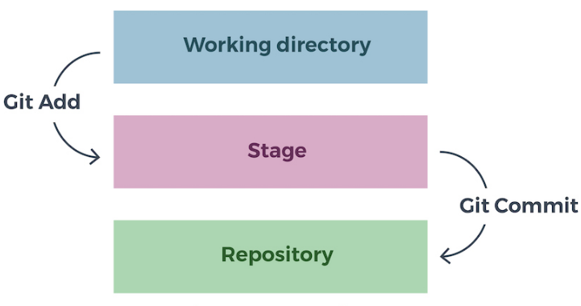

Type 1
// Initialiser git
git init
Type 2
// Preparer a la sauvegarde
git add [nom du fichier]
// Prepare tous les fichiers du repertoire courant a la sauvegarde
git add [nom du fichier]
// Prepare tous les fichiers du repertoire courant a la sauvegarde
git add --all
// Commiter (sauvegarder) les fichiers en attente de sauvegarde
git commit -m "description du commit"
// Preparer a la sauvegarde et commiter en une commande
git commit -a -m "description du commit"
Les commandes du type2 permettent de sauvegarder les fichiers dans le depot local comme l'explique le shema ci-dessous
Type3
// changer de repertoire a un fichier
git mv [ancien repertoire] [nouveau repertoire]
// renommer les fichier
git mv [ancien nom] [nouveau nom]
NB: 1.Le changement de repertoire et le renommage sont des operations de modifications comme les autres apres les avoir fait il faut le commiter (sauvegarder sur votre depot git).
2.On ne met pas les symboles "[" et "]" lorsqu'on tape les commandes j'espere que vous le savez!😂
// suprimer un fichier
git rm [nom fichier]
Type4
// Afficher l'historique de tout les commits fait sur le fichier
git log
// Afficher tout les fichiers en attente de commit
git status
// comparer les differences entre deux commits
git diff [Identifiant commit1 ] [Identifiant commit2]
NB:On retrouve l'identifiant d'un commit en tapant la commande git log
c'est la longue chaine de caracteres qui est afficher apres le mot commit.
// cloner un depot distant sur son depot local
git clone [lien du depot a cloner]
// synchoniser sa version locale avec la version distante
git pull
NB:Avant de taper git pull se placer dans le reperoire
contenant le depot cloner ulterieurement.
// Envoyer une modification sur le depot distant
git push origin [nom_de_la_branche]
Type5
// Annuler tout ce qui a ete fait depuis le dernier commit (Roll-back)
git reset -hard HEAD
Suprimer uniquement les modifications fait au dernier commit
git reset -hard HEAD^
// Revenir a une version precise de depot (commit precis)
git reset [identifiant du commit]